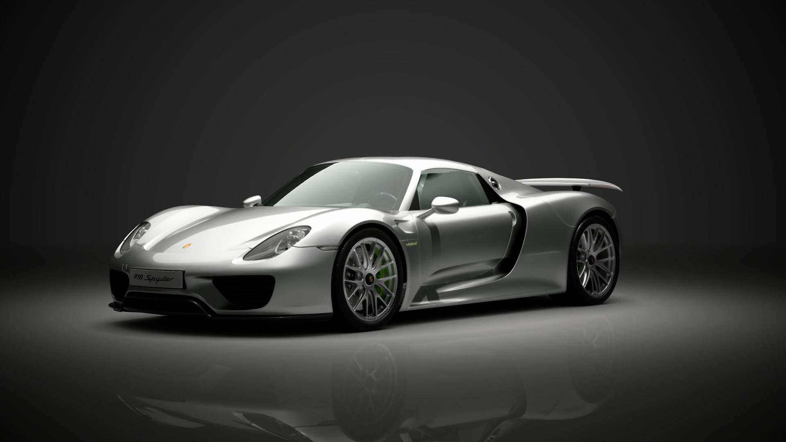
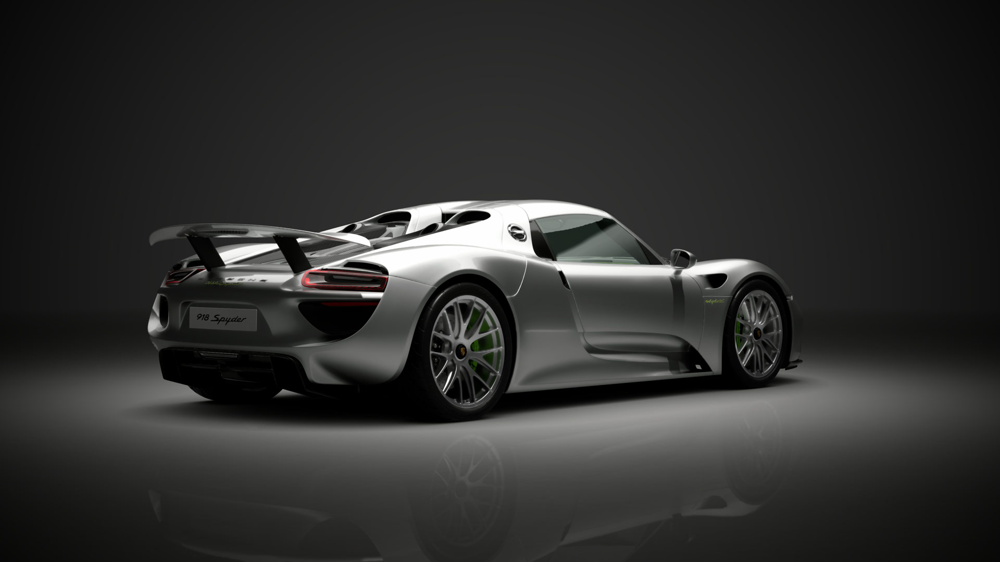
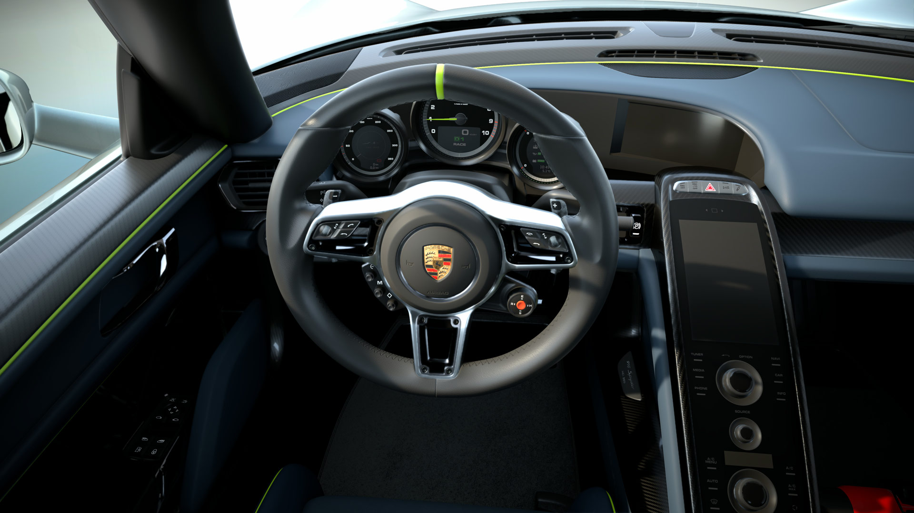

Der 918 Spyder ist das Gegenteil von Showeffekt — er ist pure Ingenieurskunst. Das Design ist funktional, zurückhaltend, fast nüchtern im Vergleich zu Ferrari und McLaren. Und genau darin liegt seine Stärke: Porsche wollte kein Poster-Auto bauen, sondern das schnellste, effizienteste und technisch fortschrittlichste Hypercar der Welt.
Die Linienführung ist geprägt von Porsches DNA: Die Front erinnert an den Carrera GT, die Lufteinlässe sind präzise platziert, die Proportionen perfekt ausbalanciert. Der 918 wirkt nicht aggressiv — er wirkt entschlossen. Jedes Element dient der Aerodynamik und der Kühlung. Form follows function, keine Kompromisse.

Der 918 Spyder nutzt ein 4,6-Liter-V8-Saugmotor aus dem RS Spyder Rennwagen, der 608 PS leistet. Dazu kommen zwei Elektromotoren: Einer an der Vorderachse mit 129 PS, einer an der Hinterachse mit 156 PS. Zusammen ergibt das 887 PS — und ein Systemdrehmoment von gewaltigen 1'280 Nm.
Anders als Ferrari und McLaren hat der 918 Allradantrieb: Die E-Motoren treiben die Vorderachse an, der Verbrenner die Hinterachse. Das Ergebnis: perfekte Traktion aus jeder Kurve, kein Durchdrehen der Räder. Porsche nennt es «intelligenten Allradantrieb» — das System verteilt die Kraft in Echtzeit dorthin, wo sie gebraucht wird. Dazu kommt: Der 918 kann bis zu 30 km rein elektrisch fahren — als einziger der Holy Trinity ein echter Plug-in-Hybrid.

Der 918 nutzt ein adaptives Fahrwerk mit Magnetdämpfern, das sich in Millisekunden an die Fahrsituation anpasst. Der aktive Heckflügel erzeugt bis zu 140 kg Abtrieb bei hohen Geschwindigkeiten — weniger als McLaren, aber effizienter. Porsche setzte auf Balance, nicht auf Maximalwerte.
Im Cockpit zeigt sich Porsches Alltagstauglichkeit: Klimaanlage Serie, bequeme Sitze (für Hypercar-Verhältnisse), moderne Infotainment-Systeme. Der 918 kann problemlos im Stadtverkehr bewegt werden — im E-Modus flüsterleise und entspannt. Auf der Rennstrecke wird er zum Raubtier. Porsche baute das vielseitigste Auto der Holy Trinity — und vielleicht genau deshalb das beste.

Erlebe den hochdrehenden 4,6-Liter-V8 — ein Sound, der an Porsches Rennsport-DNA erinnert.